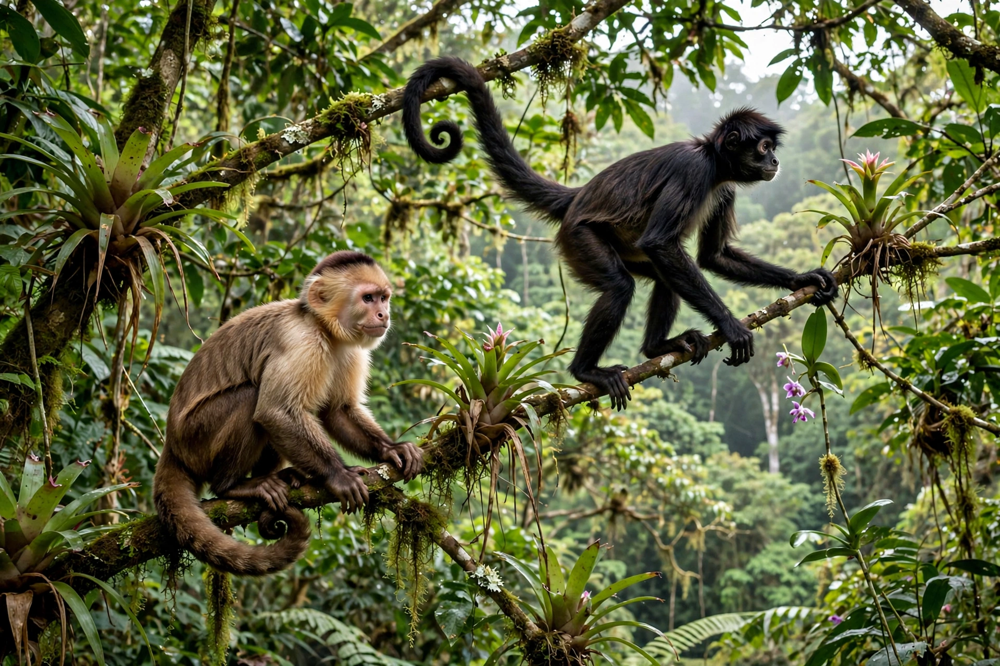

New World monkeys are the five families of primates classified in the parvorder Platyrrhini, found in the tropical regions of Mexico, Central and South America. They differ from Old World monkeys and apes (Catarrhini) in having broad, flat noses with sideways-facing nostrils, and many have prehensile tails.
They range from tiny pygmy marmosets (~100 g) to bulky howler and spider monkeys. Most are arboreal and diurnal, except the nocturnal owl monkeys. Dental formula is typically 2.1.3.3, unlike Old World monkeys. Many live in complex social groups and eat fruit, leaves, insects and gum.
Platyrrhines are thought to have reached South America from Africa by rafting across the Atlantic around 40 million years ago, then radiated in isolation.
Capuchins, squirrel monkeys, marmosets, tamarins, howler monkeys, spider monkeys, woolly monkeys, sakis, uakaris and titis.